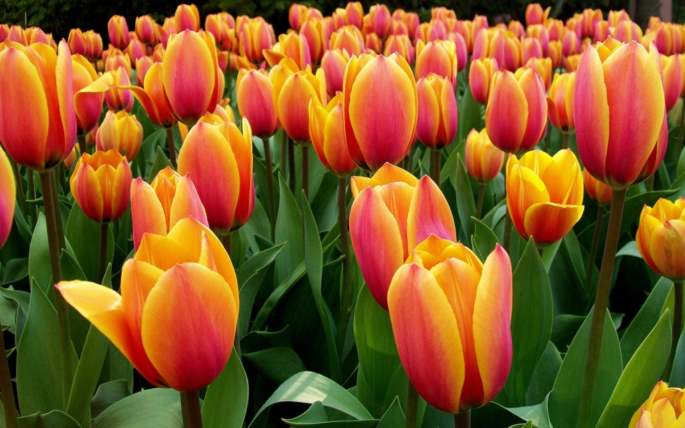

Тюльпан — один из самых узнаваемых и любимых цветов, символизирующий весну, обновление и пробуждение природы. Этот элегантный цветок с простой, но в то же время безупречной формой завоевал сердца людей по всему миру. История тюльпана насчитывает сотни лет, и его популярность только растёт с каждым сезоном.
Стебель тюльпана прямой и гладкий, что делает его очертания особенно строгими и лаконичными. Листья элонгейтит и заостренные, создавая идеальный фон для ярких соцветий. Цветовая палитра тюльпанов невероятно разнообразна: от классических красных и желтых до нежных розовых, фиолетовых, бордовых и даже почти черных оттенков. Некоторые сорта имеют интересную двухцветную окраску или пестрые узоры, что делает их ещё более уникальными.
Тюльпаны отличаются своей изящной формой чашевидного цветка, которая словно воплощает минимализм и гармонию. Когда они раскрываются на солнце, их лепестки кажутся растут в мягким внутренним светом, напоминая о начале нового цикла жизни. Хотя их цветение сравнительно недолгое, именно эта краткость делает момент их распускания особенно ценным и долгожданным.
Эти цветы ассоциируются с радостью, оптимизмом и новыми начинаниями. В разных культурах тюльпан имеет своё особое значение: например, в Турции он считается символом богатства и процветания, а в Европе стал настоящим культовым цветком во времена "тюльпаномании" в XVII веке.
Тюльпаны часто используются в букетах и декоративных композициях благодаря своей универсальности и способности сочетаться с другими цветами. Они легко ухаживать и могут преобразить любое пространство, добавляя ему свежести и живости. Тюльпан — это цветок, который всегда остаётся актуальным, будь то домашний букет или масштабное садовое оформление.